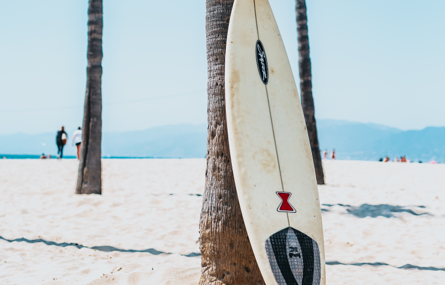
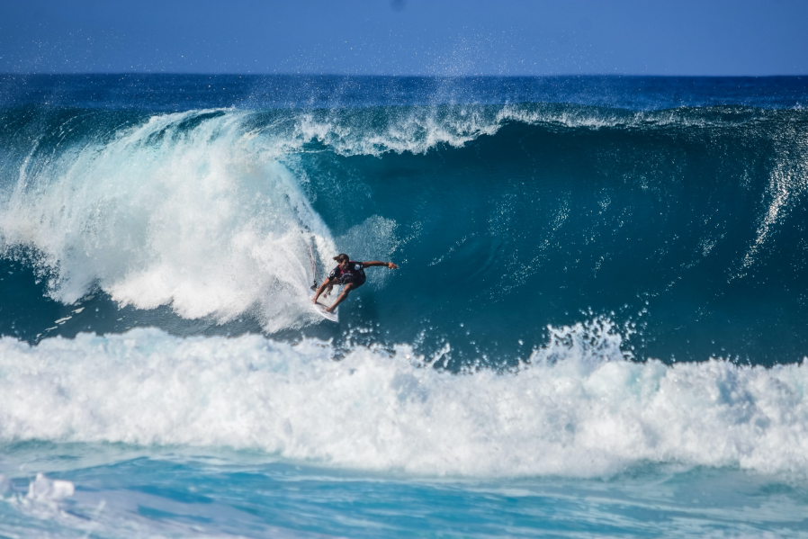
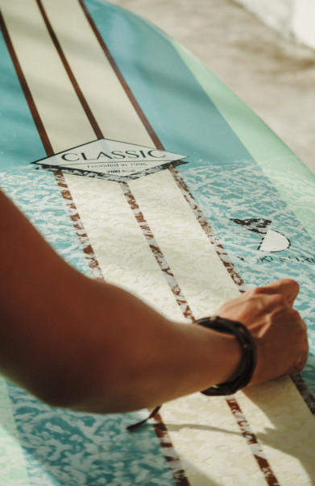
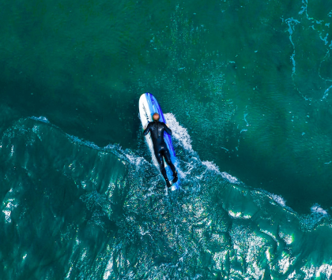

Surfboard shaping
and design behind the
scenes of crafting the
perfect board
Monday, June 05, 2023
Niklas Fischer
Monday, June 05, 2023
Niklas Fischer
Shaping surfboards is a blend of art and science, with
the goal of crafting the perfect board
that suits a surfer's
unique needs and the waves they intend to ride. Here's a
brief summary
of how surfboards are shaped and the
design considerations that go into crafting the
ideal
surfboard
Surfboards are typically made from foam blanks, which serve as the core, and are then sheathed in a fiberglass shell. This core, traditionally made from polyurethane foam, provides buoyancy and shape to the board. In recent years, EPS (expanded polystyrene) foam has gained popularity due to its lighter weight and more eco-friendly properties. The fiberglass shell, on the other hand, gives the board its rigidity and durability. Resin, often either polyester or epoxy, is used to bond the fiberglass to the foam core, and it also provides a smooth, waterproof finish.
Some modern surfboards incorporate additional materials like epoxy or carbon fiber. Epoxy is preferred by some manufacturers and surfers because of its stronger and more resilient nature compared to traditional polyester resin. Carbon fiber, known for its strength-to-weight ratio, can be added to specific areas of the board, like the tail or rails, to increase rigidity and responsiveness. Other innovations include the use of bamboo veneers for both aesthetic appeal and structural integrity, as well as recycled materials to make the production process more sustainable.

When crafting the perfect surfboard, numerous factors come into play, each contributing to the board's performance and suitability for specific conditions or surfers. These design aspects consider everything from the individual surfer's attributes to the nuances of wave conditions. Here are some critical design considerations every shaper keeps in mind when creating a board.


When crafting the perfect surfboard, numerous factors come into play, each contributing to the board's performance and suitability for specific conditions or surfers. These design aspects consider everything from the individual surfer's attributes to the nuances of wave conditions. Here are some critical design considerations every shaper keeps in mind when creating a board.
Surfing, while being a thrilling sport, is deeply personal. Each surfer brings to the waves their
unique style, preferences, and experiences. Recognizing this, many surfboards are custom-shaped to
align with a surfer's specific desires. This art of tailoring demands an intricate collaboration
between the shaper and the surfer. They work hand-in-hand, engaging in detailed discussions, to
ensure that every element of the board is meticulously fine-tuned to enhance performance and
maximize comfort. Beyond the functional aspects, there's an aesthetic side to surfboard crafting.
Some shapers, infusing their artistic flair, adorn boards with unique artwork or designs. This not
only makes the surfboard a piece of sports equipment but also a canvas that embodies individual
expression, making it visually compelling both on and off the waves.
When crafting the perfect surfboard, numerous factors come into play, each contributing to the
board's performance and suitability for specific conditions or surfers. These design aspects
consider everything from the individual surfer's attributes to the nuances of wave conditions. Here
are some critical design considerations every shaper keeps in mind when creating a board:
Surfer's Skill Level: The shaper considers the surfer's skill level, as well as their height,
weight, and experience, to determine the board's dimensions. Wave Conditions: The type of waves the
surfer intends to ride plays a crucial role in shaping. Different boards are designed for small,
mushy waves or big, powerful waves. Board Length: The length of the board affects its speed and
maneuverability. Longer boards are faster but less maneuverable, while shorter boards are more
agile. Rockers: The curvature from nose to tail (rockers) influences how a board performs. A flatter
rocker is better for speed, while a more pronounced rocker helps with turning. Rails: The rails, or
edges of the board, affect stability and control. Sharp rails are more responsive, while rounder
rails provide stability. Volume: The volume of the board impacts buoyancy and paddling ease. More
volume is helpful for beginners, while advanced surfers may prefer less. Tail Shape: Different tail
shapes (e.g., pintail, squash tail, swallowtail) offer various turning characteristics and control.
Surfboards are typically made from foam blanks, which serve as the core, and are then sheathed in a
fiberglass shell. This core, traditionally made from polyurethane foam, provides buoyancy and shape
to the board. In recent years, EPS (expanded polystyrene) foam has gained popularity due to its
lighter weight and more eco-friendly properties. The fiberglass shell, on the other hand, gives the
board its rigidity and durability. Resin, often either polyester or epoxy, is used to bond the
fiberglass to the foam core, and it also provides a smooth, waterproof finish.
.
Some modern surfboards incorporate additional materials like epoxy or carbon fiber. Epoxy is
preferred by some manufacturers and surfers because of its stronger and more resilient nature
compared to traditional polyester resin. Carbon fiber, known for its strength-to-weight ratio, can
be added to specific areas of the board, like the tail or rails, to increase rigidity and
responsiveness. Other innovations include the use of bamboo veneers for both aesthetic appeal and
structural integrity, as well as recycled materials to make the production process more sustainable.
